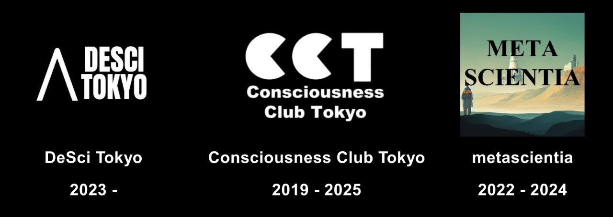
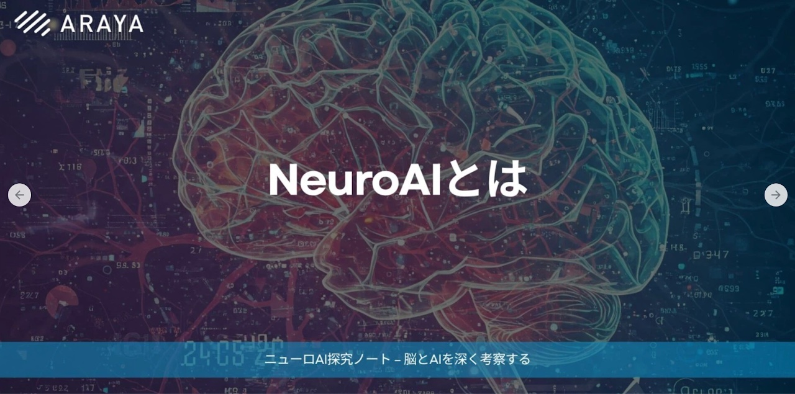

I create spaces where researchers, citizens, governments, and companies think together about the future of science and society. From international conferences and speaker invitations to research communities, video and podcast production, and crowdfunding, I take projects from concept through operations and outreach. For events or video projects for researchers, please email gutenmorgen172 [at] gmail.com.
304
participants at Funding the Commons Tokyo (United Nations University, two days)
2,000+
registered members of Consciousness Club Tokyo (grown from 33)
5h 43m
to reach the DeSci Tokyo crowdfunding goal, the fastest on the platform
59
videos in the DeSci Tokyo interview series (episodes, trailers, and shorts)
What I can help with
International events and symposia
Directed Funding the Commons Tokyo (United Nations University, 304 participants), and organized DAO UTokyo (co-hosted with the Ethereum Foundation) and the DeSci Tokyo Conference (nearly 140 participants).
Inviting speakers from Japan and abroad
Speakers have included Audrey Tang, Glen Weyl, Aya Miyaguchi, Max Hodak (former Neuralink CEO), Tali Sharot, and Shinsuke Shimojo, leaders in technology, policy, and consciousness research.
Running research communities
Running DeSci Tokyo since its launch in 2023. As the second lead of Consciousness Club Tokyo, ran 29 talks and grew registrations from 33 to over 2,000.
Video, podcast, and article production
Interviewer for the DeSci Tokyo interview series (59 videos). The podcast metascientia was acknowledged in the book Science of Science (Morikita Publishing) and mentioned in a survey report commissioned by Japan’s Ministry of Education.
Fundraising and outreach
The DeSci Tokyo crowdfunding campaign raised about 2.35 million yen and reached its goal in a platform-record 5 hours 43 minutes. For CHAIN’s campaign, promoted a series of X Spaces that helped reach the 2 million yen goal within 10 days.
Books and essays
Responsible for a section of the Japanese edition of PLURALITY and contributed an essay to Ghost in the Shell: MESSED MESH AMBITIONS, carrying the questions raised at these events into print.
All events and projects
DeSci Tokyo interview series (2026-11 ~ 2027-01) YouTube
A video series with Prof. Genki Kanda (Institute of Science Tokyo), Brandon Possin (Merito Network), and Dr. Ken Suzuki (natural philosopher). Six full episodes and 53 trailers and short videos.
Hamada is the interviewer for the series and manages its release.
PRANCE International Symposium “Reverse Alignment: Can a Plural Society Accept AI?” (2026) Keio University event page
With E. Glen Weyl as special speaker and a video message from Audrey Tang.
Organizer, 29 sessions, online, subscribers grew from 33 to 2,030
Hamada designed the logo and led planning and operations. Since October 8, 2025, operations have passed to other members, and Hamada contributes as an advisor.
Hamada served as article planning lead, author, and editor.

Community hub: DeSci Tokyo 2023-02 ~
DeSci Tokyo is a community hub that supports researchers and research organizations through decentralized systems. It has three main goals.
An international hub for DeSci: Create an international hub for new research ecosystems, promoting global research and building a resilient research ecosystem.
Support for data sharing and technology transfer: Support groups and organizations that share real-world data and intellectual property (IP), accelerating innovation through efficient research and development.
Building new forms of research ecosystems: Propose and support new forms of research funding from industry and philanthropy, and new funding systems for researchers.
Events
Funding the Commons Tokyo (2024)
PRANCE International Symposium “Reverse Alignment: Can a Plural Society Accept AI?” (2026)
Nemoto, K., Kudo, S., Ueda, K., Shirosaki, S. Nomura, A., Weidener, L., Hamada, H.T. The dawn of Decentralized Science (DeSci) in Japan: Values and principles. Preprint
Hamada, H.T. A new ecosystem opened up by decentralized science: the role of DeSci.Tokyo. Information Science and Technology. Vol. 74 (2024), No. 3. (in Japanese) Article
Crowdfunding
March 9–30, 2023: “A new academia with decentralized science: launching DeSci.Tokyo” (raised 2,348,999 yen against a goal of 1,000,000 yen)
Reached its goal in 5 hours 43 minutes, the fastest on the platform.
Support
Support for attending the Metascience 2025 Conference (Shiro Takagi, Ryuichi Maruyama) X post
Nyx Foundation is a private research institute focused on Ethereum. It runs research, formal verification, white-hat hacking, education, and a research house.
Video series: DeSci Tokyo interviews (2026-11 ~ 2027-01)
An interview video series produced by DeSci Tokyo. Researchers, entrepreneurs, and thinkers talk about research automation, new ways to fund research, and science and society in the age of AI. Six full episodes and 53 trailers and short videos are released on YouTube and X from November 10, 2026 through January 2027. The series supports citizen science and open-ended science. Episodes are in Japanese, except the Brandon Possin episode, which is in English with Japanese subtitles.
Hamada is the interviewer for every episode and manages the release.
Production: DeSci Tokyo, bitgrit
Release schedule (full episodes)
November 10, 2026: Hiro Taiyo Hamada (DeSci Tokyo) — the crisis in Japanese science, and DeSci (decentralized science) as a way for citizens to support it
November 17, 2026: Prof. Genki Kanda (Institute of Science Tokyo), part 1 — how does science change when robots run the experiments? Reproducibility, experts’ tacit knowledge, and a robotic cloud biology center
November 24, 2026: Prof. Genki Kanda, part 2 — how does society change when research is automated? Democratizing science, finding treatments for rare diseases, and research automation as social reform
December 7, 2026: Brandon Possin (Merito Network) — the cost of sending research funds, and the barriers to DeSci in Japan
December 21, 2026: Dr. Ken Suzuki (natural philosopher), part 1 — how should humans live in the age of AI? AI and the acquisition of language, AGI, and the illusion of autonomy
December 29, 2026: Dr. Ken Suzuki, part 2 — digital democracy, scam ads on social media, and plural principles for AI
Short videos are released alongside each episode through mid-January 2027.
Funding the Commons Tokyo (FtC Tokyo, 2024)
FtC Tokyo brought together companies, organizations, and individuals working on regeneration in response to global environmental, community, and scientific challenges, to present a vision of regenerative mechanisms for public goods.
On July 24, we invited speakers on new research ecosystems.
AI x blockchain, open science, new research infrastructure, new funding mechanisms
On July 25, we invited speakers on regenerative mechanisms.
Regenerative systems, regional revitalization, open source, social common capital, democratic AI, digital democracy
Hamada wrote about the questions behind FtC Tokyo for the Ghost in the Shell project MESSED MESH AMBITIONS. Book announcement
Around the time of the event, the Japanese translation of PLURALITY, led by Audrey Tang and Glen Weyl, was confirmed for publication. Hamada was responsible for section 3-3, “Quality control and the smooth society”.
PRANCE International Symposium “Reverse Alignment: Can a Plural Society Accept AI?”
Artificial intelligence is advancing faster than the institutions that govern and receive it. Much of AI research has focused on improving AI capabilities and aligning AI with human values. Reverse alignment poses the complementary question: how must society itself change to receive increasingly powerful AI while preserving human agency, democratic accountability, plurality, and broadly shared prosperity?
The symposium examined this question from three perspectives: reverse alignment as a new sociotechnical research agenda, the historical experience of Meiji Japan in adopting Western science and technology, and the relationship between technological transformation, community, and conservatism.
The program featured E. Glen Weyl (Microsoft Research) as a special speaker, in dialogue with scholars of law, the history of science, and political thought, with a planned video message from Audrey Tang (Taiwan’s Cyber Ambassador).
DAO UTokyo is an invitation-only two-day conference that will bring together practitioners, policymakers, and academics to engage in conversation regarding the research, legal, and policy considerations of DAOs (decentralized autonomous organizations) as well as the greater Web3 space in the Asia-Pacific. DAO UTokyo is modeled after the 2023 DAO Harvard Summit and co-hosted by some of the same organizers.
Day 1: Policy Focus. Day 1 will feature lightning talks and short panels by participants from a range of institutions to discuss Web3 policy efforts, successes, and challenges throughout the Asia-Pacific.
Day 2: Research Focus. Day 2 will feature lightning talks and short panels on the role that organizations such as cooperatives, open-source communities, and DAOs are playing in enabling equitable ownership, in addition to the hurdles (legal and otherwise) they are facing. Talks on non-DAO Web3 research are also welcome.
DeSci Tokyo Conference (2023)
DeSci Tokyo Conference 2023 is a one-day conference. DeSci pushes the boundaries of human knowledge by decentralizing science. DeSci Tokyo is a community hub for Tokyo to host events and "DeSci Tokyo Conference". Website
Community hub: Consciousness Club Tokyo (2019-2025)
CC Tokyo is a Tokyo hub for people working on consciousness research.
We hold online and offline talks by consciousness researchers from around the world.
As its second leader, Hamada planned and ran online seminars, especially during the COVID-19 pandemic.
Ran 29 talks and contributed to growth of more than 2,000 subscribers (2,000 subscribers as of June 9, 2025)
Max Hodak, Science Co. CEO, former Neuralink CEO, Towards Consciousness Engineering Movie
Lenore Blum & Manuel Blum, Carnegie Mellon School of Computer Science, A Framework for a Conscious AI Movie
Shinsuke Shimojo, Gertrude Baltimore Professor at California Institute of Technology (Division of Biology & Biological Engineering / Computation & Neural Systems) Movie
A podcast under the concept of “rethinking science”, introducing and discussing science news from around the world, deep-tech startups, and science from a meta perspective.
Science of Science (Morikita Publishing): a long-awaited book on the interdisciplinary field that uses data analysis to take an objective look at science itself.
metascientia was mentioned in the acknowledgments.
metascientia was mentioned as a momentum close to the metascience movement.
An interview with Hamada was published in a survey report commissioned by Japan’s Ministry of Education, Culture, Sports, Science and Technology on recent changes to research and development ecosystems. Report (in Japanese)
Article series: NeuroAI Exploration Notes

NeuroAI Exploration Notes is a series of articles on the concepts and technologies of NeuroAI. All articles are in Japanese.